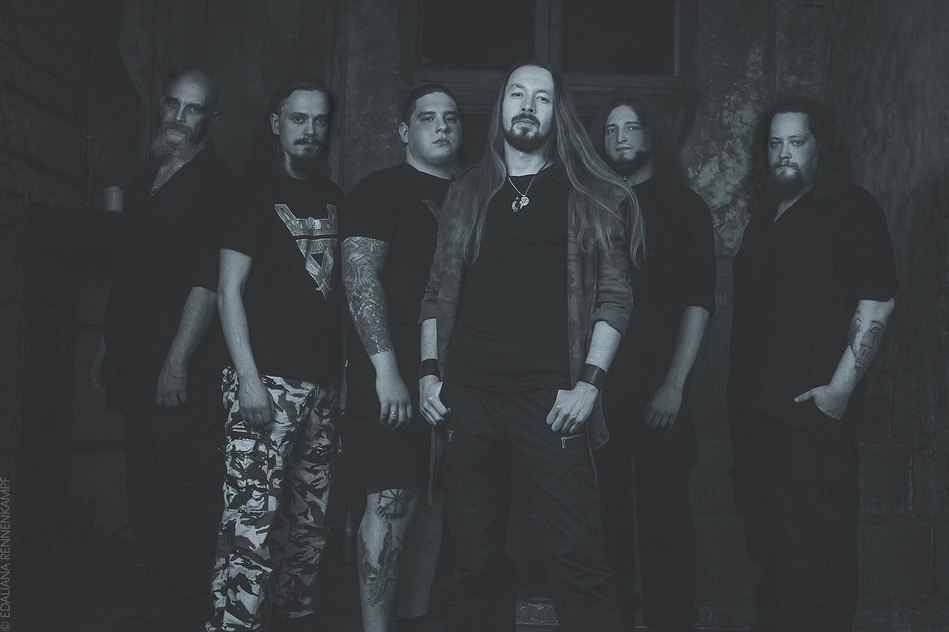
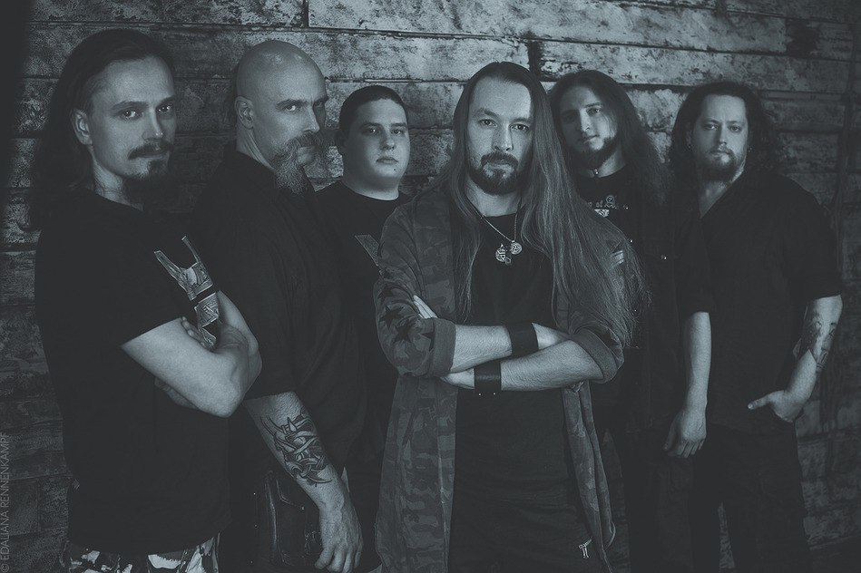
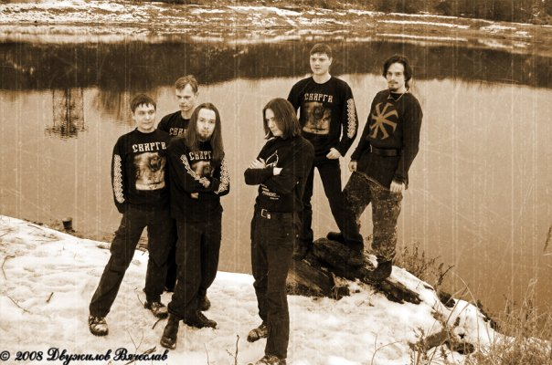

СВАРГА
Одна из самых мрачных русских folk/pagan групп не нуждается в дополнительном представлении.
Более двадцати лет на сцене. Четыре полноформатных альбома.
Несколько сайдпроектов и множество успешных разноплановых студийных работ с сессионным участием музыкантов коллектива.
Сварга совершенно оправданно считается одним из лидеров отечественной folk/pagan сцены и по-настоящему душевным коллективом.

Группа Сварга была основана в конце 1997 года в подмосковном городе Жуковский.
Первоначально задумывалась как коллектив, исполняющий русскоязычный pagan doom-metal,с лирикой, основанной на древних славянских мифах.
В таком качестве группа просуществовала до 1999 года. К этому времени стиль поменялся в сторону folk pagan metal.
Клавиши в группе сменил аккордеонист Hurry, а звучание Сварги стало более мягким.
Отличительной особенностью группы можно считать обилие фольклорных элементов и акустических вставок.
Состав группы

Дискография
